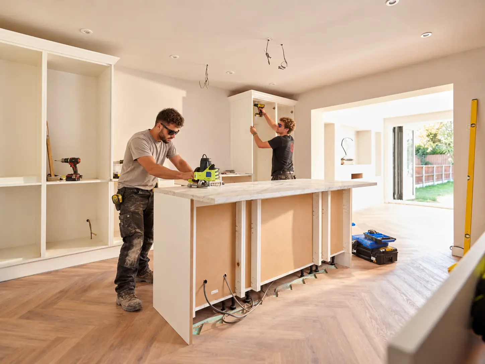
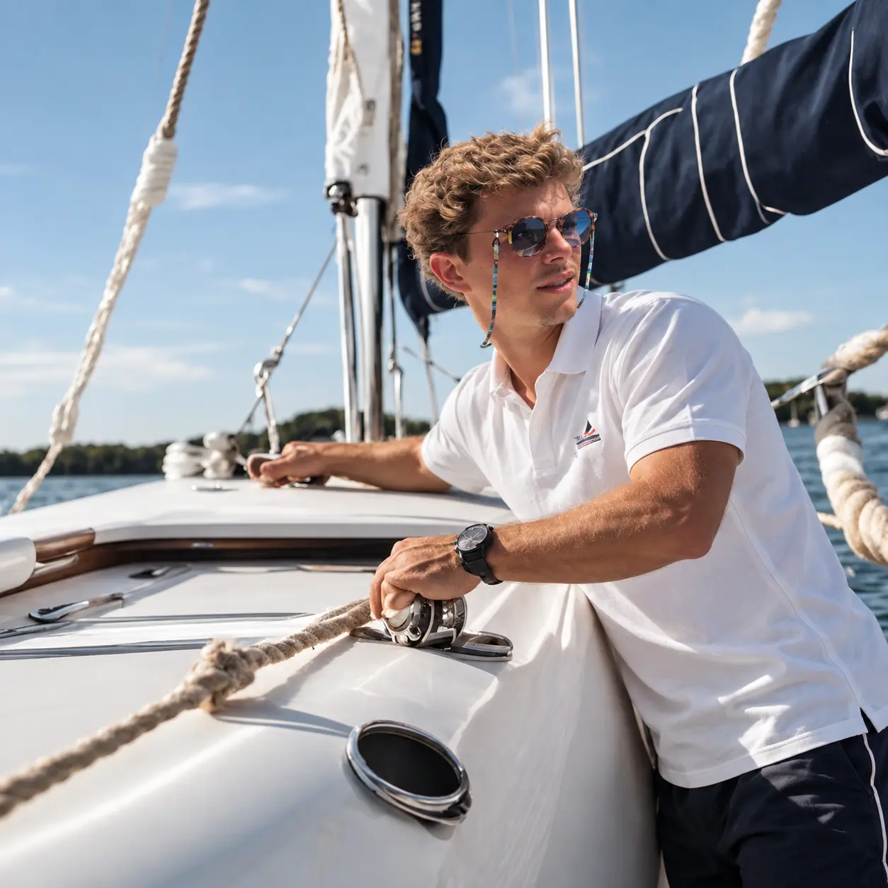
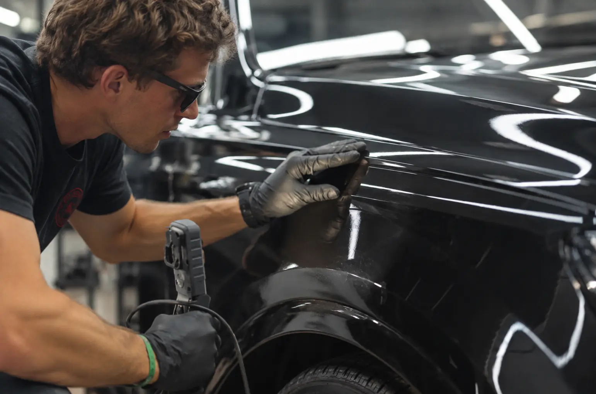
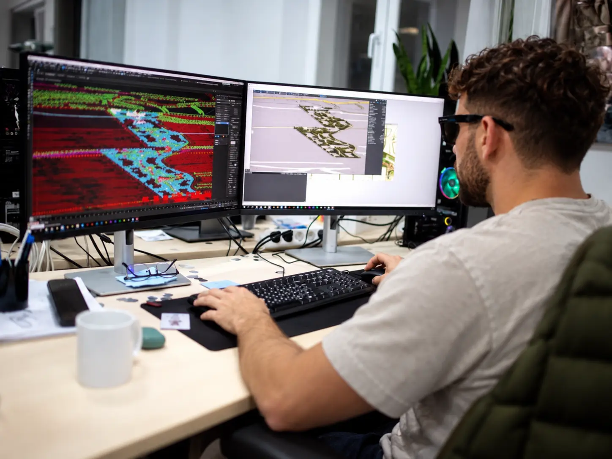

01 · CO-FOUNDER
Henrique Cardoso
Lidera design, CGI e desenvolvimento visual, ligando apresentação digital, pensamento de projeto e execução prática.
Design · CGI · Desenvolvimento de Projeto

A PAPOA liga design e desenvolvimento visual às pessoas, competências e especialidades necessárias para transformar uma ideia num projeto concluído.
A PAPOA desenvolve o conceito, a visualização e a direção do projeto e depois monta a equipa certa para cada trabalho — da carpintaria e estofos à instalação, sistemas e acabamentos.
Assim mantemos uma estrutura flexível e juntamos, em cada projeto, as pessoas mais adequadas ao trabalho.
A equipa principal dirige o projeto e trabalha com uma rede de profissionais especializados. A composição muda consoante o barco, o âmbito e o nível de intervenção necessário.




Dois percursos complementares: design e desenvolvimento de projeto de um lado; negócio, náutica e parcerias do outro.
Lidera design, CGI e desenvolvimento visual, ligando apresentação digital, pensamento de projeto e execução prática.
Lidera desenvolvimento de negócio, relações na náutica e parcerias, ligando a PAPOA a clientes, fornecedores e equipas especializadas.

A PAPOA trabalha entre Vilamoura e Cascais, com um modelo pensado para acompanhar o projeto onde estiver — através de planeamento, visualização, coordenação e uma rede de especialistas.
Trabalhar com a PAPOA →